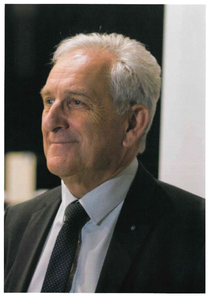

Fesches-Le-Châtel
Charles DEMOUGE, Maire de Fesches-Le-Châtel Président de Pays de Montbéliard Agglomération
Edito :
PETITES VILLES DE DEMAIN
FESCHES-LE-CHÂTEL
Ce programme soutient les dynamiques de transition, afin d'améliorer les conditions de vie des territoires de 20 000 habitants.
Fesches-le-Châtel va pouvoir concrétiser certains projets en cours. Ceux-ci ont été ciblés comme le développement et l'amélioration de l'accès aux équipements et services publics, le confortement du développement économique, la valorisation du cadre de vie et du patrimoine local pour l'amélioration de l'offre d'habitats afin de favoriser le bien vieillir.
C'est l'Agence Nationale de la Cohésion des Territoires (ANCT) qui pilote la mise en oeuvre du programme "Petites villes de demain" au plus près du terrain et des habitants par l'intermédiaire de ses délégués territoriaux et des Préfets.
L'Agence de Développement et d'Urbanisme (ADU) du Pays de Montbéliard réalise actuellement, en concertation avec les élus, une étude stratégique pour l'élaboration et la formalisation du diagnostic, du projet de territoire et du plan d'actions.
Des actions matures sont déjà identifiées comme :
Travaux de réfection de la toiture de l'usine Bedeville (en cours)
Création d'un marché couvert sur la friche industrielle de l'espace du Magny
Requalification et sécurisation des jeux du square
Création de jardins partagés
Mise en place d'un espace "France Services"
Votre Maire, Charles DEMOUGE